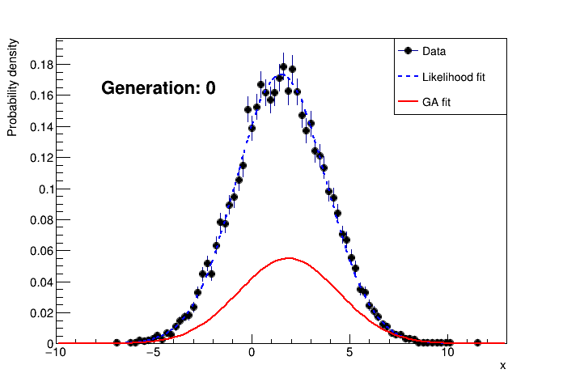

Introduction:
This project is a first of my new one-day-build mini-projects serie. It is my take on implementing a simple version of the Genetic Algorithm using C++, with a demo use case consisting of fitting a gaussian distribution to a data histogram.
General Code Description:
For a description of the code and compiling/running instructions, see Genetic Algorithm README.
Algorithms Description:
The genetic algorithm consist of finding the best set of paramters for a given model using the following concepts (shamelessly stolen from the work of our mother nature over the last several billions of years):
- Population: the genetic algorithm takes as input a population where each individual is a different instance of a configurable model and evolve it into a population of individuals that best represent the solution to a given problem.
- Variability: variation is at the center of the genetic algorithms: if we have only a handfull of ways to configure our model, the room for optimization towards a best solution would be limited. The configurations of the initial population are randomly chosen to allow the exploration of the full phase space of configurations.
- Selection and cross-over: Some of the individuals in the original population will be better fitted than others to answer the solution to our problem. A figure of merit is defined to provide a ranking of our population from the best to the least fitted. The next generation is then constructed by crossing over individuals selected among the best fitted from the current generation.
- Mutations: To maintain variability through the next generations, occasional mutations are introduced. These consist of randomoly introducing new features (i.e. new configurations not inherited from the parents), with a controlled rate.
The genetic algorithm repeats the selection, cross-over and mutations steps until the best fitted individual reach a certain fitness threshold.
Implementation details:
The demo case:
The demo case generates pseudo-random data following a gaussian distribution and uses the genetic algorithm to guess the parameters of the gaussian from the data. The results are then compared with a likelihood fitting method as implemented in the ROOT library.
To make this implementation reusable in future projects, abstract interfaces are used for the different elements: generic features are implemented in the interface base classes, while features that are specific to the demo case are implemented in derived classes.
The Model:
The model is what we are trying to optimize. In general, it is described by a set of properties that can have different values.
- The interface:
IModelis minimal since the details of the model are use-case specific. The only thing the interface knows about is the fact that a model can be scored. - The demo case:
ParametricModeldescribes a parametric 1D formula of a gaussian distribution of the form:\[ f(x) = N e^{-\frac{(x-\mu)^2}{\sigma^2}} \]
The implementation using ROOT's powerful TF1 formula class allows our ParametricModel sub-class to describe any formula in any number of dimensions and depending on any number of parameters, not to mention the possibility to draw a graph representing our model without the need for a lot of extra code.
The figure of merit:
Sometimes it's called a fitness function: I prefer the term figure of merit over fitness function, because the latter suggest a function that increases with goodness (i.e. the higher the better) while there is no reason for this to always be the case. In fact, in our demo case example, a better \(\chi^2\) is a smaller one.
- The interface:
IFigureOfMeritprovides placeholders for the following functionalities:- Assign a score to a given model.
- Given two scores, decides which is better.
- Given a score, decides if it passes the acceptable threshold criteria.
- The demo case:
Chi2FitFigureOfMerituses a \(\chi^2\) over number of degrees of freedom estimator to compare a model with a given data set. A data set consists of \(N\) \((\vec{x_i}, y_i)\) pairs with an associated error \(\sigma_{y_i}\) on \(y_i\). The figure of merit is then given by:\[ \chi^2/nfd = \frac{1}{N}\sum_{i=0}^{N}\frac{(y_i - f(\vec{x_i}))^2}{\sigma_{y_i}^2} \]
The population:
The population defines a generation of models and controlls the way models are selected, crossed-over and mutated to build the next generation.
- The interface:
IPopulationalready implements a large portion of the functionalities using the interfaces provided for the figure of merit and the model. This include tasks such as ranking the population and finding the best fitted individuals, selection based on this ranking, and handling the mutation rate. - The demo case:
ParametricModelPopulationimplements the details of initialization, cross-over and mutation:- Initialization: the initial population is constructed using random values for the parameters withing a pre-defined range.
- Cross-over: the cross-over of two individuals is achieved by passing on the values for each parameter randomly from one or the oher parent. Parents are selected such as the probability to give offspring depends linearly on the rank of the parent. Figure Fig1 shows the probability vs rank for a population of 500. An exception is made to the best fitted individual which is always preserved intact in the next generation.
- Mutation: the mutation is done by slightly modifying a randomly chosen parameter by adding a guassian noise component.

|
The algorithm:
The GeneticAlgorithm class wraps everything above and controls the flow of the algorithm using the defined interfaces. It performs the following steps:
- Creates an initial population.
- Rank the population.
- Repeat the following until a solution is found or a maximum numeber of generations is reached:
- Select parents among the fittest individuals.
- Cross them over to form a new population.
- Mutate some individuals.
- Rank the new population.
Results:
An example output of the demo looks like this:

|